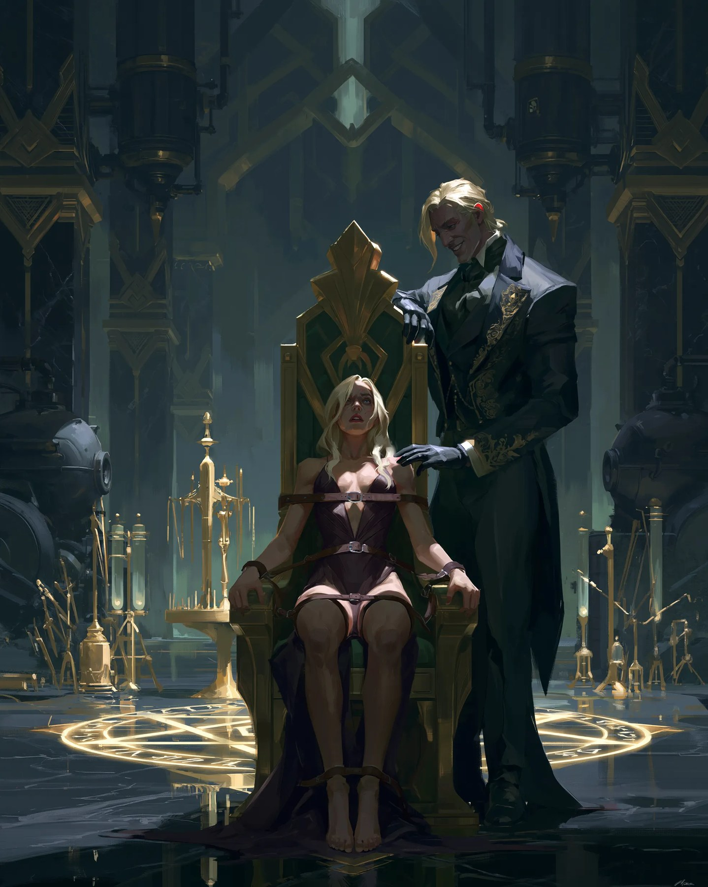

AKTA MIEJSKIE · RAVENLOFT
CASE: HEARTWELL
KAMPANIA GOTYCKIEGO HORRORU · RAVENLOFT
Książęta
Heartwell
Miasto czarnego kamienia, smogu i oparów prochu strzelniczego.
“
„Już wówczas miasto nasze popadało coraz bardziej w chroniczną szarość zmierzchu, porastało na krawędziach liszajem cienia, puszystą pleśnią i mchem koloru żelaza.”
— Bruno Schulz, Sklepy cynamonowe, „Nawiedzenie”DANE MIEJSKIE
ODCZYT AKT
Liczba mieszkańców
~150 000
Dzielnice
7
Książęta
7
Technologia
Silnik Diesela ✧ Magia ✧ Fotografia ✧ Alchemia ✧ Kolej ✧ Okultyzm ✧ Szalone Wynalazki
Nastrój
Gotycki horror ✧ Noir ✧ Dieselpunk

AKTA · FOTOGRAFIA
CASE HEARTWELL / PLATE 01
Książęta Heartwell
DIESEL · RAVENLOFT · MIASTO SZEŚCIU DZIELNIC
ARCHIWUM VENGRATH · DOKUMENT WIZUALNY
“
„Miasto tonęło w brudnych czarnych oparach i dymach, które leżały niby opona nad miastem, jakby się wspierając na tysiącach kominów.”
— Władysław Stanisław Reymont, Ziemia obiecana
Heartwell
Heartwell